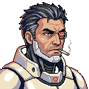

1. 개요
HMH의 등장인물. 모든 이름은 임시다. 이름 옆에는 늘 역할을 함께 적는다.
2. 김병장 · 국밥집 주인·요리사
| 김병장 | |
|---|---|
| 역할 | 무림국밥 주인 · 요리사 (주인공) |
| 출신 | 지구, 한국군 만기 병장 취사병 |
| 소환 | 전역 이틀 전 |
| 복장 | 한국군 디지털 무늬 군복 |
| 얼굴 | 늘 맨얼굴 (마스크 안 씀) |
| 특기 | 「식신의 손맛」 (효능만, 맛은 별개) |
| 말버릇 | "넵!" |
전역 이틀 전, 전역이 밀린다는 소식에 짜증이 치민 순간 하수도의 어설픈 흑마법사 셋이 치르던 소환 의식과 마음이 맞물려 이 세계로 끌려왔다.
「…아 씨. 이틀 남았는데.」
소환 직후 화난 김에 냅다 지른 주먹에 흑마법사 셋이 기절했다. 원래 그런 성격은 아니다. 흑마법사들이 의식으로 마나가 바닥나 기진맥진해 있었을 뿐이다. 그 뒤 현실을 부정하다 낡은 무림국밥으로 흘러갔고, 가게를 넘겨받았다.
- 겁이 많고 세상 물정을 모른다. 벽을 '공사'로 안다.
- 국밥이 맛없다는 걸 본인도 안다. 이유는 순전히 실력. 손님이 왜 다시 오는지는 모른다.
- 군인다움은 습관만 남았다. 벽에 대한 책임감은 없다.
- 깡통이에게는 반말을 한다.
- 이 세계 글자를 삐뚤게 따라 쓴다. "네가 써 주면 안 되냐?" → 깡통이가 업그레이드 광고를 띄운다.
- 강해지지 않는다. 단단해진다.
- 맛은 중반에 들어오는 제자 덕분에 나아진다. 제자가 누구인지는 미확정.
⚠ 스포일러 — 펼치기
김병장이 사실 아무 힘도 없는 일반인이라는 걸 처음부터 아는 건 오소미뿐이다. 다른 단골과 강자들은 끝까지 착각한다. 김병장은 침식 기운만 안 먹힐 뿐, 침식체한테 맞으면 그냥 다친다.
자세한 건 김병장의 착각 참고.
3. 오소미 · 단골 손님·히로인
| 오소미 | |
|---|---|
| 역할 | 단골 손님 · 히로인 |
| 소속 | 잔해 청소반 (Z구역 토박이) |
| 종족 | 인간 |
| 머리 | 빨간 머리 |
| 전투 | 하지 않음 |
| 공략 루트 | 없음 |
무림국밥의 단골이자 히로인. 공략 루트는 없고 싸우지도 않는다. 국밥이 맛없다고 대놓고 말하는 몇 안 되는 손님이다. 그녀와의 인연으로 잔해 청소반 쪽 사람들이 가게에 온다.
4. 깡통이 · 중고 배달 드론·안내자
| 깡통이 | |
|---|---|
| 역할 | 유일한 배달 수단 · 안내자 |
| 정체 | 싸구려 중고 드론 |
| 말 | 못 한다 (삑 소리와 패널 화면만) |
| 업무 | 캡슐 수납 · 등급 감정 · 배달 |
말을 못 한다. 삑삑거리고 패널에 뭔가 띄울 뿐이다. 깡통이의 생각은 김병장의 대사로 플레이어에게 전해지고, 김병장이 답답해하면 어김없이 업그레이드 광고가 뜬다. 벽에 가는 유일한 존재라 깡통이의 배달 보고가 김병장이 아는 벽의 전부다.
5. 옛 주인 할아버지 · 무림국밥 전 주인
「…딱 국밥상이다.」
이 한 줄만 남기고 가게를 넘긴 뒤 떠난다. 진짜 이유는 끝까지 밝히지 않는다. 그게 개그다.
6. 반쪽방패 영감 · 단골 손님(전직 성기사로 추정)
반으로 쪼개진 낡은 방패를 등받이로 쓰는 노인. 벽이 세워지던 시절을 아는 것 같지만 자세히 말하지 않는다. 대사는 드물다.
「…방패는 무겁지 않아. 뒤에 아무도 없을 때가 무겁지.」
⚠ 스포일러 — 펼치기
영감은 카시안 발레노르 성기사단의 마지막 생존자다. 벽을 처음 찾은 날 성문 쪽을 한참 보다가 이렇게 말한다.
「…열둘. 아니. 됐다.」
회상 방송 뒤에는 단장을 두고 「고집이었지. 끝까지.」라고 한 마디만 남긴다.
7. 카시안 발레노르 · 10년 전 성기사단장
| 카시안 발레노르 | |
|---|---|
| 역할 | 10년 전 성기사단장 |
| 소속 | 에클레아 서약공사 |
| 상태 | 사망 |
| 신념 | "내 방패로 모두를 지킨다" |
| 기념 | 발레노르 방벽 |
무너진 칸델라리아의 생존자들을 Z구역까지 이끌어 마지막 아이까지 문 안으로 들여보내고, 돌아서서 방패를 꽂았다. 단원들과 함께 결계로 시간을 벌다 쓰러졌다. 방벽은 그의 이름을 땄다.[1]
8. 에드먼드 그레이브 · 천칭원 제3집정관
| 에드먼드 그레이브 | |
|---|---|
 | |
| 역할 | 천칭원 제3집정관 · 레이드 지원 아군 |
| 외형 | 담배를 줄곧 피우는 중년 남자, 흰 계열 최신 장비 |
| 몸 | 기업들이 상납한 기술로 온몸 개조 |
| 유지 | 캡슐을 계속 공급받아야 산다 |
| 궁극기 | "지금부터 집행을 시작하겠다" |
평소엔 맨얼굴이고, 필살기를 쓰거나 예열이 끝나면 투구가 닫힌다. 피도 눈물도 없이 집행해서 웃는 표정이 없다. 처음엔 라이벌이지만 레이드를 도우러 오는 아군이 된다. 레이드 보스나 적으로는 절대 나오지 않는다.
9. 흑마법사 삼인방 · 무허가 서클 흑마법사
베라네 삼인방. 하수도의 무허가 서클로, 뿔 후드에 이빨 마스크로 폼을 잡는다. 김병장을 소환한 장본인들이지만, 자기들이 뭘 불렀는지는 모른다.
10. 노라 벨칸트 · 평형방송 진행자
→ 평형방송
11. 란테아 실바레 · 케일른 검침원
케일른 마력공사의 검침원. 정체는 영웅 풀에 합류하기 전까지 비공개.
12. 영웅들
벽을 지키는 영웅들. 손님의 정체·소속은 영웅 풀에 합류한 뒤에야 드러난다. 영웅은 많을수록 좋고, 기업 간 균형은 신경 쓰지 않는다. 아래는 이름이 확정된 인물이다(소속·역할 세부는 미확정).
| 이름 | 역할 |
|---|---|
| 리셀 아운 | 영웅 |
| 솔방울 (본명 솔렌디아 피오렐라) | 영웅 |
| 모래 (코드네임, 본명 두네 카스파리) | 영웅 |
| 베라 크로나크 | 영웅 |
| 도르카 곰바위 | 영웅 |
| 칠호 (인간 시절 이름 시에테 바르가스) | 영웅 |
| 반달 (본명 우르소 칼레비) | 영웅 |
| 바늘 (본명 네울라 코바치) | 영웅 |
| 석포 (본명 케림 알툰) | 영웅 |
| 멘타 이바라 | 영웅 |
| 누리 | 영웅 (진명은 각성 때 밝혀짐) |
12.1. 영웅 후보
- 진무겸의 파문당한 형 · 영웅 후보 — 죽은 줄 알았는데 벽 밖에서 돌아왔다. 침식된 건 아닌지가 이야기 줄기.
- 마스크와 얼굴 문신을 한 여성 · 영웅 후보 — 도시 강자급. 시크하지만 김병장을 은근히 챙긴다.
각주
- ^ 이름은 제작자 요청으로 지어졌다. 짧고 단단한 소리와 무너지지 않는 성채 같은 울림.